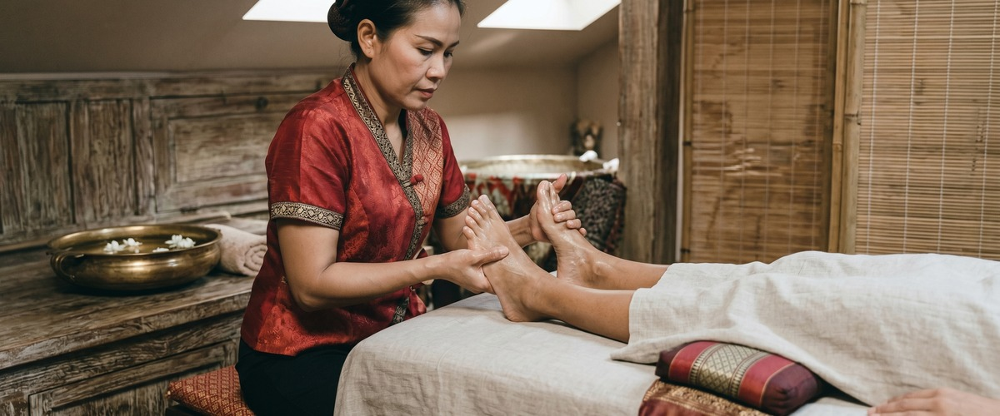
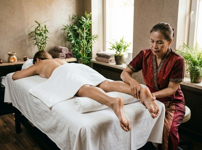

If your feet ache after a long day on your feet, a full shift at a desk, or a weekend walk along the Clyde, Thai foot massage at Thai Massage Greenock is built for exactly that.

This treatment works on the feet, ankles, and lower legs to release built-up tension and leave you feeling lighter throughout your whole body.
Thai foot massage is a therapy rooted in centuries of Thai and Chinese healing tradition. It uses thumbs, fingers, knuckles, and a rounded wooden stick to press on key points across the soles and arches of the feet.
Each point links to a different organ or system in the body, so the benefits reach well beyond the feet. The treatment also includes gentle stretching of the toes and ankles to improve movement and ease stiffness.

Unlike a standard foot rub, Thai foot massage works along the body's sen energy lines. It applies targeted pressure to boost circulation, ease tightness in the lower legs, and support the body's natural recovery. You can book your session online and arrive ready to switch off.
Thai foot massage in Greenock suits anyone who carries the day in their feet and legs. Retail workers, nurses, and teachers who spend hours standing will feel the difference quickly.
It works just as well for runners and gym-goers with tired lower legs as it does for desk workers whose circulation suffers from long periods of sitting.
If you struggle to wind down at the end of the day or wake with heavy legs, this treatment directly tackles that pattern.
You stay fully clothed throughout and sit comfortably with your feet and lower legs free for Jariya to work on. Sessions run from 30 to 60 minutes.
Jariya works through the soles, arches, heels, and ankles using hand pressure and the traditional wooden stick. She then moves to the calves with longer strokes to boost circulation and ease muscle tightness.
Pressure is adjusted to your comfort throughout. Most clients describe it as deeply relaxing, with moments of focused intensity around tight areas.
Many feel noticeably lighter on their feet afterwards and sleep better that night. You can book a Thai foot massage at a time that suits you.
Jariya Malone trained at Bangkok's Wat Po temple, the home of traditional Thai massage. Every session is personal.
Jariya keeps notes on each client and builds on previous treatments, so the work becomes more targeted over time. If you'd like to explore other options, the clinic also offers traditional Thai massage, Thai oil massage, and Thai facial massage.
No. You stay fully clothed throughout. You will be asked to roll your trousers or leggings up to the knee so Jariya can work on your lower legs, but nothing else is needed. Loose, comfortable clothing makes this easier.
Sessions run from 30 to 60 minutes. A 30-minute session focuses on the feet and ankles. A 60-minute session covers the lower legs and calves as well, which most clients find gives a better result.
Thai foot massage should not be painful. Jariya adjusts pressure throughout and will check in with you, especially around tender or tight areas. Some sensitivity around certain pressure points is normal and usually fades as the session goes on. If anything feels uncomfortable, just say so.
For general upkeep and stress relief, once or twice a month works well for most clients. If you have a specific issue — such as plantar fascia tightness, poor circulation, or ongoing lower-leg fatigue — weekly sessions tend to build on each other and bring faster results.
Both use pressure points on the feet that link to areas of the body, so there is real overlap. Thai foot massage also covers the lower legs, calves, and ankles with hands-on massage and assisted stretching. This makes it more physical and more focused on local tension. Reflexology stays purely on the feet and follows a mapped chart of reflex zones.
It depends on the injury and how far along healing is. Active swelling, recent sprains, or open wounds are reasons to wait, and Jariya will advise you to hold off until the area has healed. For long-term conditions like plantar fasciitis or general ankle stiffness, Thai foot massage can be very helpful. Please mention any existing conditions when you make your booking.